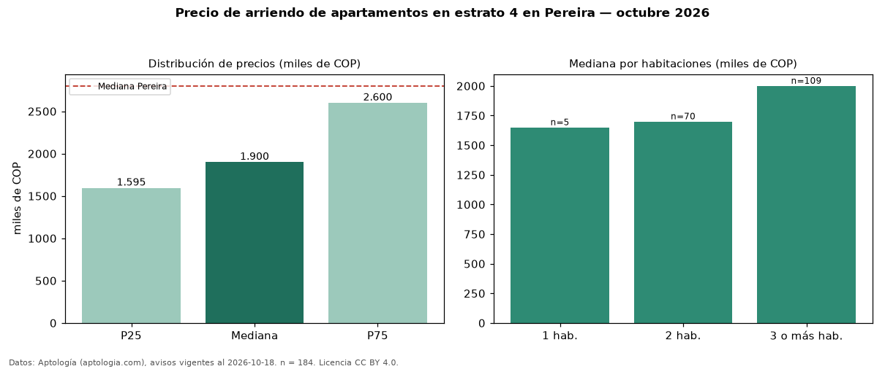

Precio de arriendo de apartamentos en estrato 4 en Pereira — octubre 2026
Con 184 avisos vigentes, el canon mediano de apartamentos en estrato 4 en arriendo en Pereira es COP 1,90 millones al mes. Frente a la mediana de los apartamentos en arriendo de Pereira (COP 2,80 millones, n = 1.561), queda 32 % por debajo; este segmento reúne el 12 % de esos avisos. Por metro cuadrado, la mediana es COP 30.421/m² al mes (n = 182), 9 % por debajo de los apartamentos en arriendo de Pereira (COP 33.333/m²). El área mediana anunciada es 62 m². El segmento con más oferta es el de 3 o más habitaciones (109 avisos, mediana COP 2,00 millones); pasar de 1 habitación a 3 o más habitaciones cambia la mediana +21 %. La administración mediana declarada es COP 290.000 al mes (n = 84), aparte del canon. La mitad central de los avisos va de COP 1,59 millones a COP 2,60 millones (razón 1,6), una dispersión moderada. Datos: Aptología (aptologia.com), CC BY 4.0 — https://www.aptologia.com/arriendo/pereira. Archivos: PDF, CSV con las cifras y gráfica PNG.

| Avisos únicos | 184 |
|---|---|
| Percentil 25 | COP 1.595.000 |
| Mediana | COP 1.900.000 |
| Percentil 75 | COP 2.600.000 |
| Mediana por m² | COP 30.420 |
Fuente: avisos vigentes de portales inmobiliarios recopilados por Aptología, deduplicados (mínimo 30 avisos únicos por celda). Precios pedidos, no cerrados. Fecha: 2026-10-18.